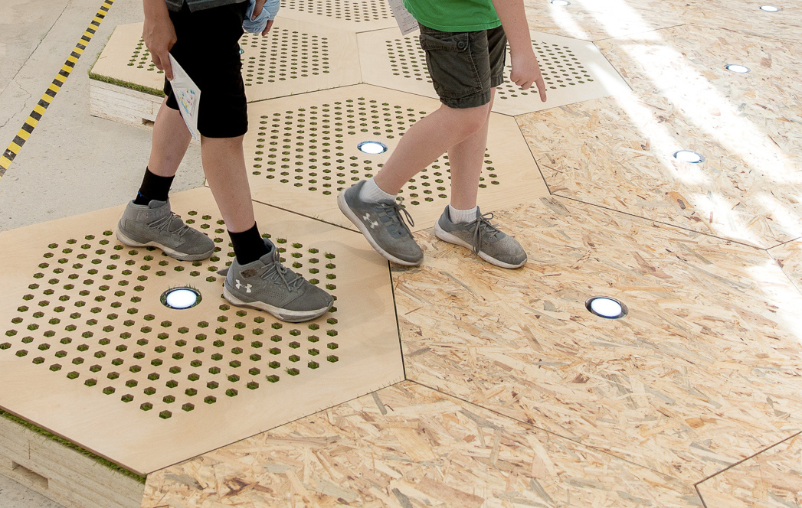
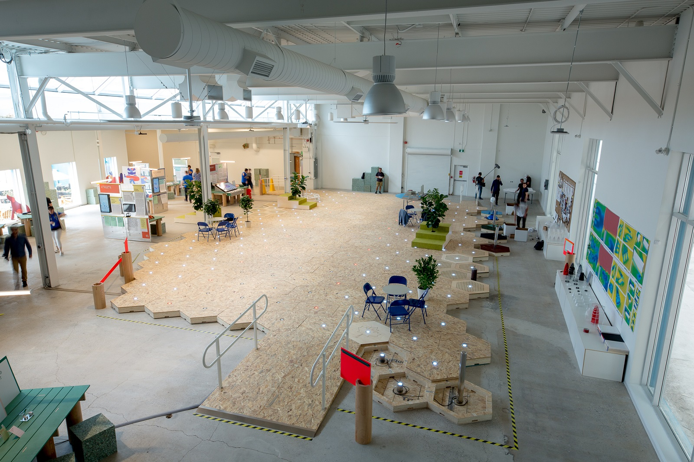
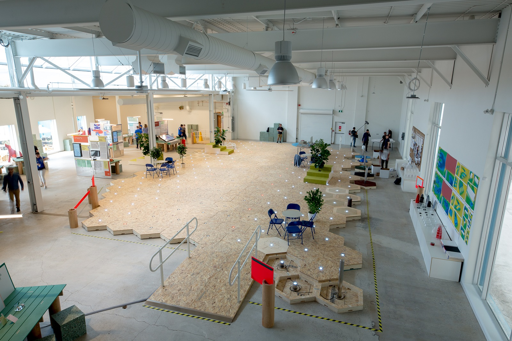

“What if we could create a streetscape that responds to citizens’ needs - hence changing dynamically?” Carlo Ratti_
The Dynamic Street, a prototype of a modular and reconfigurable paving system which hints at the possibility of the streetscape seamlessly adapting to people’s needs. In order to reconfigure the streetscape for multiple uses, the project explores the different patterns that can be created on the hexagonal grid as well as the integration of lights into individual pavers.
how it started
Commissioned by Alphabet's subsidiary Sidewalk Labs, the project represented a chance for experimenting with a . There, Sidewalk Labs is planning to deploy the ultimate smart city within the next few years, and we started with designing and building a full scale prototype of its streetscape.
Imagine an urban street, nestled between buildings with mostly foot and bicycle traffic. During the morning and evening hours, there might be a steady stream of commuters heading to work. In the middle of the day and the evening, families might use the street as a play space. And on the weekend, the street could be cleared for a block party or a basketball game.
The Dynamic Street features a series of which can be picked up and replaced, according to . We created a taxonomy of different for such pavers, as shown below. Each one of the pavers comprehends .
On top of the paver, we also investigated how different could contribute to assigning new functions to the space.
In the end, a combination of (the street furnitures and paver toppers) combined with the would help users understand how the space was changing.
prototyping and manufacturing
The first mockups were very conceptual, still helping the team to develop and . It was then when it first occurred to us that we also had to consider . Should it be a mechanical device which looks like a shopping kart? Should it be instead a fully autonomous scary robot?
Hence we started to experiment ourselves - apart from rubber and wood, which materials did we want to explore? We had a lot of fun with !
Engineering-wise, the was surely the most challenging aspect. It was meant - such as a bollard.
So quickly after testing on full scale mockups in Italy, the team moved to Toronto, where we started to construct the , enjoying the breeze coming from Lake Ontario.
final result
The project resulted in a vast true scale prototype of about , where visitors could engage with Sidewalk Labs, with designers and eventually with the municipality in order to about the future of Toronto.
How could users be involved in ? On the one hand, visitors could engage with the paver-picking robot. On the other hand, everybody could load "new configurations" from a . Users could (i.e. 1 car + 2 bikes lanes) or literally . In that way, the feedback was of immediate understanding to most.
 

The installation opened to the public for a series of events managed by Sidewalk Labs Toronto which aimed at engaging with the community of Toronto and dedbating about the topic of .
That's how we created a in Toronto.
Behind the scenes
Sidewalk Labs with CRA-Carlo Ratti Associati paver, plug and mechanical robot engineering, prototyping, construction site monitoring architectural design, app design by Sidewalk Labs David Pike, CRA-Carlo Ratti Associati, Luca Giacolini